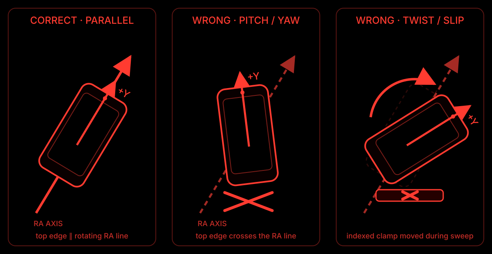
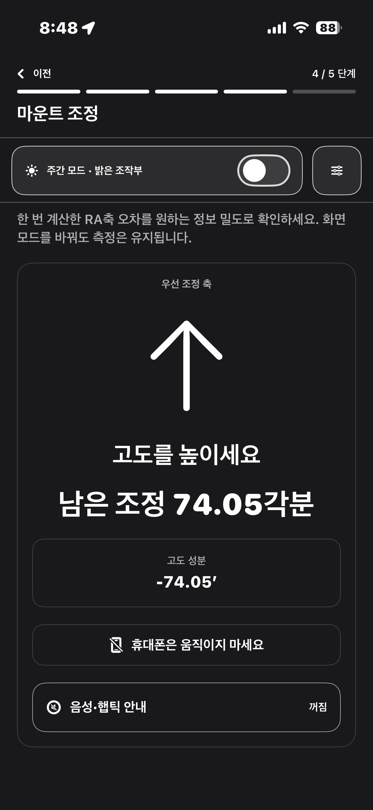

우선 조정 축
‘고도를 높이세요’가 보이면 마운트의 고도 조정 나사를 사용합니다. ‘왼쪽으로 돌리세요’처럼 표시되면 방위각 조정 나사를 사용합니다.
iPhone polar alignment guide
망원경에 고정한 iPhone으로 수평과 RA축 회전을 확인하고, 마운트를 어느 방향으로 얼마나 조정할지 차례대로 안내합니다.
적도의식 마운트용 iPhone 안내 도구
먼저 장착합니다
세로로 세우는 뜻이 아닙니다. 휴대폰을 경통 위에 수평으로 얹을 수 있습니다. 중요한 것은 세로 방향으로 놓인 iPhone의 화면 상단과 RA축 선이 나란해야 한다는 점입니다.

화면 상단은 북극성 쪽, 즉 극축이 향하는 쪽으로 둡니다. 반대로 올리면 하늘 방향 안내가 반대로 표시됩니다.
앞뒤 기울기는 극축의 고도 때문에 생길 수 있습니다. 처음에는 좌우 기울기만 수평계로 맞추고, 앞뒤 각도는 마운트 고도 조정으로 다룹니다.
측정 중에는 케이스, 케이블, 클램프 위치를 바꾸지 않습니다. 휴대폰이 미끄러졌다면 앞에서 기록한 자세는 사용하지 않고 새 측정을 시작합니다.
화면으로 확인합니다
상세 모드는 RA축 측정이 끝난 뒤, 지금 무엇을 돌려야 하는지와 남은 조정량을 큼직하게 보여 줍니다. 숫자를 보며 휴대폰을 움직이는 방식이 아니라, 휴대폰은 고정한 채 마운트의 조정 나사를 움직이는 흐름입니다.

‘고도를 높이세요’가 보이면 마운트의 고도 조정 나사를 사용합니다. ‘왼쪽으로 돌리세요’처럼 표시되면 방위각 조정 나사를 사용합니다.
각분 단위로 표시되는 값은 현재 조정이 얼마나 남았는지 알려 줍니다. 조정 나사를 조금씩 움직이고, 마운트가 멈춘 뒤 다음 안내를 확인합니다.
이 안내가 나오는 동안 휴대폰을 손으로 밀거나 다시 얹지 않습니다. 고정이 풀렸다면 재시작 버튼으로 새 측정을 시작합니다.
측정 순서
케이블과 장비 간섭을 피하기 위해, PolarPilot은 가능한 범위에서 -90° → 0° → +90° → 0° → -90°의 다섯 정지 자세를 기록합니다. 정확히 90°를 맞출 필요는 없지만, 각 자세의 차이가 충분히 나야 합니다.
RA축을 기준 0° 근처에 두고, 휴대폰과 클램프가 움직이지 않는지 확인합니다.
가능한 범위 안에서 왼쪽으로 돌려 멈춘 뒤 기록하고, 기준 자세로 돌아와 다시 기록합니다.
반대쪽 자세도 기록한 뒤 0°와 -90°로 다시 돌아와, 처음과 같은 장착 상태인지 확인합니다.
측정이 끝나면 휴대폰은 그대로 두고, 앱이 알려 주는 고도 또는 방위각 조정 나사만 움직입니다.
자주 묻는 질문
네. 휴대폰을 세로로 세울 필요는 없습니다. 다만 화면 상단이 RA축과 나란하고, RA축을 돌릴 때 휴대폰도 함께 움직이는 위치여야 합니다.
아닙니다. 케이블이나 삼각대 간섭 없이 갈 수 있는 범위에서 충분히 다른 자세를 만들면 됩니다. 앱은 실제 회전량과 반복 자세의 일치 여부를 함께 확인합니다.
아닙니다. 화면 상단이 향하는 예상 방향을 이해하기 위한 참고 표시입니다. 카메라 영상이나 실제 별 인식 결과가 아니며, 정렬 완료 판정에도 사용하지 않습니다.
Availability
PolarPilot은 실제 별을 이용한 최종 정렬 판정 도구가 아니라, 마운트 조정을 준비하고 진행하는 동안의 센서 기반 안내 도구입니다. 배포 준비가 되면 이 페이지에서 안내합니다.